RadWorld
A World Foundation Model for 3D Tomographic Medical Imaging
Pretrained on 232,781 CT and MRI scans, RadWorld readily adapts to generate realistic 3D scans from a radiology report, a mask, another scan or treatment details.
1Monash University 2Ant Healthcare 3Shanghai Artificial Intelligence Laboratory 4Stanford University School of Medicine 5Shanghai Innovation Institute 6The First Affiliated Hospital of Jinan University 7Fudan University 8Fuzhou University
‡ Equal contribution · * Corresponding authors
Every scan below was generated by RadWorld
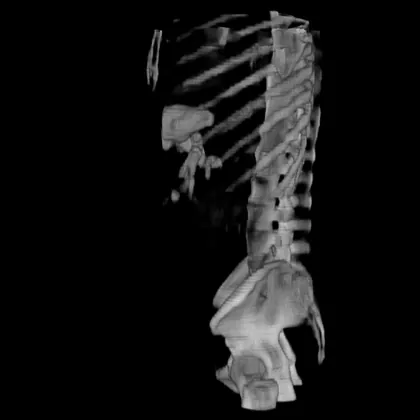
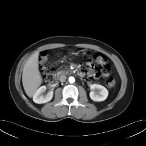
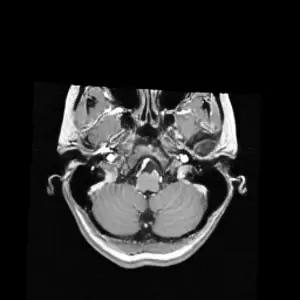
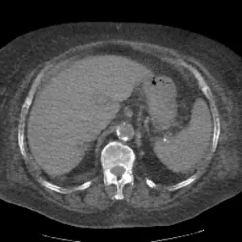
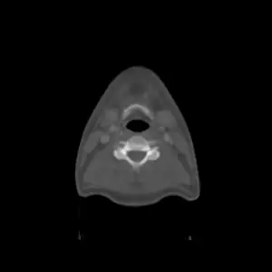
Overview
Why a world foundation model?
-
The problem
Clinical scans leave gaps
Scans are taken to answer specific clinical questions, so even large datasets cover patients, diseases and protocols unevenly, which holds back medical AI. Scanning more costs money, burdens patients and can add radiation.
-
The gap
Most generators are built for one task
Generative models can help fill these gaps, but most are built for one modality, one type of input or one clinical use, so what they learn is hard to reuse.
-
Our approach
Learn once, then adapt
RadWorld first learns how 3D anatomy and disease appear across 232,781 scans, then adapts this knowledge to each new task instead of training a new generator from scratch.
One pretrained foundation, adapted to each task
- Radiology report
- Organ or tumor mask
- CBCT or MR
- T1, T2 and FLAIR
- Non-contrast CT
- Pre-treatment CT and treatment details
- 3D CT
- 3D MRI
Generation
Realistic CT and MRI, generated in full 3D
From a scan type and anatomy, a radiology report or an organ mask, RadWorld generates complete 3D volumes.
Outperforms existing 3D generators in fidelity
Fréchet inception distance (FID), lower is better
| Benchmark | HA-GAN | MAISI | 3D-MedDiffusion | RadWorld |
|---|---|---|---|---|
| Head and neck | 263.3 | 157.5 | 147.3 | 47.4 |
| Chest | 199.0 | 86.6 | 64.1 | 56.4 |
| Abdomen | 226.3 | 89.3 | 89.2 | 49.0 |
| Pelvis | 253.3 | 75.1 | 104.2 | 55.8 |
| Head and neck | 135.6 | 208.4 | 93.1 | 80.0 |
| Chest | 195.1 | 230.6 | 148.5 | 110.1 |
| Abdomen | 210.1 | 120.7 | 120.5 | 79.0 |
| Pelvis | 204.8 | 129.1 | 111.0 | 79.2 |
Reproduces anatomy specified by masks more accurately
Dice across 16 abdominal organs, higher is better
| Organ | MAISI | RadWorld |
|---|---|---|
| Liver | 0.930 | 0.953 |
| Left kidney | 0.905 | 0.927 |
| Right kidney | 0.892 | 0.927 |
| Spleen | 0.878 | 0.925 |
| Stomach | 0.815 | 0.887 |
| Bladder | 0.785 | 0.872 |
| Intestine | 0.708 | 0.756 |
| Colon | 0.707 | 0.749 |
| Pancreas | 0.650 | 0.725 |
| Esophagus | 0.601 | 0.630 |
| Duodenum | 0.513 | 0.601 |
| Gallbladder | 0.332 | 0.589 |
| Left femur | 0.541 | 0.588 |
| Rectum | 0.394 | 0.581 |
| Adrenal | 0.414 | 0.503 |
| Right femur | 0.338 | 0.497 |
Visual Turing test
Can you tell real from synthetic?
58.8%of the time, board-certified radiologists took RadWorld's synthetic tumor scans for real.
Your turn: ten cases from the study
Each tumor is outlined, as it was for the radiologists.
Answers stay in your browser.
Classification accuracy by reader experience
Blinded reading of real and synthetic tumor scans
| Readers | Accuracy (%) |
|---|---|
| Junior radiologists | 52.9 |
| All radiologists | 59.7 |
| Senior radiologists | 66.0 |
Synthetic data
Synthetic scans that improve medical AI
Added to real training data, RadWorld scans improved abnormality classification, tumor segmentation and report generation, more than scans from other generators. Each generator added twice as many synthetic scans as real ones.
Better than real-only training for every abnormality, with the highest overall AUC
AUC for chest CT abnormalities, higher is better
| Abnormality | Real data only | + GenerateCT | + MedSyn | + RadWorld |
|---|---|---|---|---|
| Hiatal hernia | 0.477 | 0.483 | 0.489 | 0.609 |
| Lung opacity | 0.546 | 0.559 | 0.613 | 0.632 |
| Atelectasis | 0.566 | 0.582 | 0.608 | 0.690 |
| Adenopathy | 0.623 | 0.612 | 0.623 | 0.650 |
| Pericardial effusion | 0.633 | 0.641 | 0.635 | 0.672 |
| Calcification | 0.579 | 0.614 | 0.680 | 0.688 |
| Lung nodule | 0.609 | 0.647 | 0.673 | 0.673 |
| Emphysema | 0.535 | 0.586 | 0.676 | 0.772 |
| Bronchiectasis | 0.610 | 0.679 | 0.615 | 0.784 |
| Consolidation | 0.644 | 0.657 | 0.724 | 0.723 |
| Fibrotic sequela | 0.645 | 0.756 | 0.737 | 0.826 |
| Pleural effusion | 0.790 | 0.813 | 0.852 | 0.902 |
| Overall | 0.613 | 0.650 | 0.665 | 0.723 |
Highest Dice across all eight tumor types
Tumor segmentation Dice, higher is better
| Tumor | Real data only | + DiffTumor | + FreeTumor | + RadWorld |
|---|---|---|---|---|
| Nasopharynx | 0.576 | 0.590 | 0.598 | 0.629 |
| Head and neck | 0.632 | 0.653 | 0.654 | 0.675 |
| Lung | 0.625 | 0.651 | 0.691 | 0.723 |
| Liver | 0.599 | 0.700 | 0.703 | 0.730 |
| Pancreas | 0.487 | 0.541 | 0.535 | 0.588 |
| Colorectum | 0.438 | 0.476 | 0.476 | 0.531 |
| Kidney | 0.729 | 0.762 | 0.764 | 0.783 |
| Bladder | 0.673 | 0.726 | 0.724 | 0.764 |
Highest scores across all report metrics and regions
Textual similarity (BLEU-2, ROUGE-L, METEOR) and clinical accuracy (GREEN) of generated reports, higher is better
| Region | Real data only | + GenerateCT | + MedSyn | + RadWorld |
|---|---|---|---|---|
| Chest | 0.215 | 0.263 | 0.264 | 0.270 |
| Abdomen | 0.320 | 0.340 | 0.342 | 0.358 |
| Pelvis | 0.193 | 0.252 | 0.250 | 0.258 |
| Chest | 0.311 | 0.320 | 0.316 | 0.324 |
| Abdomen | 0.413 | 0.426 | 0.429 | 0.442 |
| Pelvis | 0.373 | 0.377 | 0.372 | 0.388 |
| Chest | 0.322 | 0.336 | 0.339 | 0.352 |
| Abdomen | 0.373 | 0.399 | 0.395 | 0.410 |
| Pelvis | 0.424 | 0.428 | 0.429 | 0.435 |
| Chest | 0.266 | 0.274 | 0.288 | 0.314 |
| Abdomen | 0.421 | 0.442 | 0.446 | 0.501 |
| Pelvis | 0.665 | 0.686 | 0.690 | 0.741 |
Translation
Translate across modalities, sequences and contrast phases
Generate a missing CT, MRI sequence or contrast phase from the scans you have. The real scan of the same patient is shown for comparison.
Outperforms specialized models in image fidelity
Peak signal-to-noise ratio (PSNR, dB) of the whole volume, higher is better
| Setting | ResViT | pGAN | MMGAN | RadWorld |
|---|---|---|---|---|
| CBCT to CT | 23.4 | 23.7 | 23.8 | 26.4 |
| MR to CT | 21.3 | 22.4 | 22.8 | 24.8 |
| T1, T2, FLAIR to T1CE | 22.0 | 21.3 | 22.5 | 24.3 |
| Non-contrast to venous phase | 22.7 | 25.7 | 25.0 | 26.3 |
| Non-contrast to arterial phase | 20.8 | 26.2 | 24.4 | 27.2 |
Synthetic T1CE preserves segmentation information
Post-treatment glioma, Dice against segmentation with the real T1CE
| Region | Zero imputation | MMGAN | RadWorld |
|---|---|---|---|
| Enhancing tumor | 0.497 | 0.386 | 0.802 |
| Tumor core | 0.508 | 0.398 | 0.862 |
| Whole tumor | 0.805 | 0.793 | 0.919 |
Synthetic contrast raised reader accuracy at every experience level
Radiologists classifying liver cases as normal, benign or malignant
| Readers | Non-contrast CT only | + synthetic contrast CT | + acquired contrast CT |
|---|---|---|---|
| Junior | 0.750 | 0.792 | 0.833 |
| Mid-level | 0.775 | 0.833 | 0.850 |
| Senior | 0.792 | 0.833 | 0.867 |
| All readers | 0.772 | 0.819 | 0.850 |
Treatment
Virtual post-treatment CT supports survival prediction
For liver cancer treated with chemoembolization (TACE), RadWorld generates a virtual post-treatment CT from the pre-treatment CT and treatment details. In two independent cohorts, the virtual CT predicted progression-free survival nearly as well as the real follow-up CT.
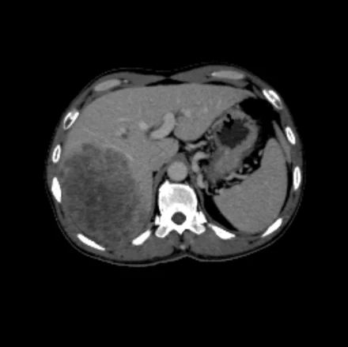
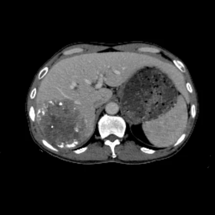
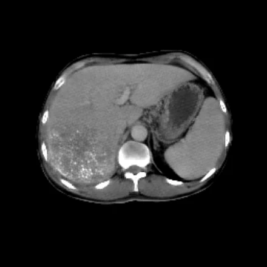
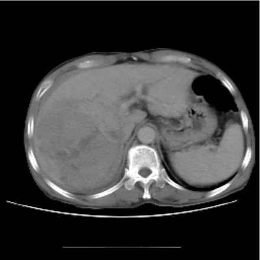
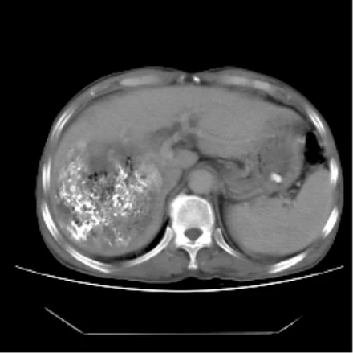
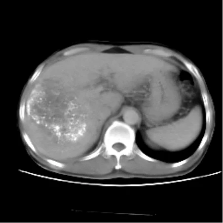
Improves survival prediction, comparable to real post-TACE CT
C-index for progression-free survival, higher is better
| Cohort | Pre-TACE CT only | + patient and procedural variables | + real post-TACE CT | + virtual post-TACE CT |
|---|---|---|---|---|
| Cohort A | 0.577 | 0.595 | 0.732 | 0.727 |
| Cohort B | 0.571 | 0.595 | 0.726 | 0.721 |
Cohort A
Progression-free survival of risk groups predicted from virtual post-TACE CT
Hazard ratio 2.73, P < 0.0001
Cohort B
Progression-free survival of risk groups predicted from virtual post-TACE CT
Hazard ratio 2.45, P < 0.0001
Citation
Cite RadWorld
@article{ye2026radworld,
title = {A World Foundation Model for 3D Tomographic Medical Imaging},
author = {Ye, Jin and Ma, Chenglong and Zhang, Lu and others},
journal = {arXiv preprint},
year = {2026}
}
Contact
- Jin Yejin.ye@monash.edu
- Yuanfeng Jiyfj@stanford.edu
- Jianfei Caijianfei.cai@monash.edu
- Junjun Hehejunjun@pjlab.org.cn